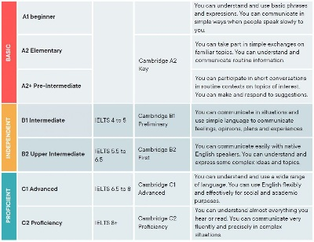
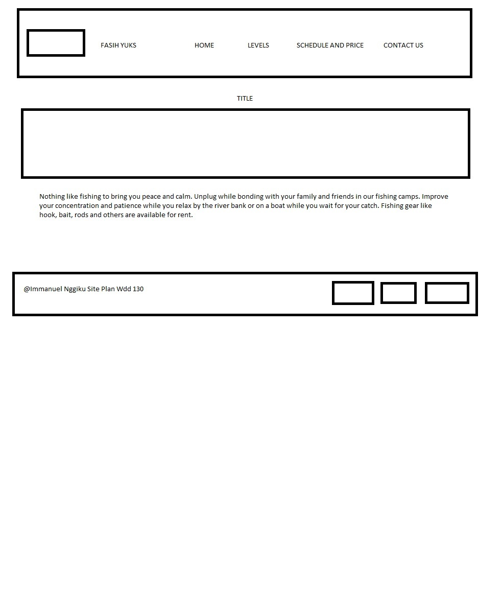
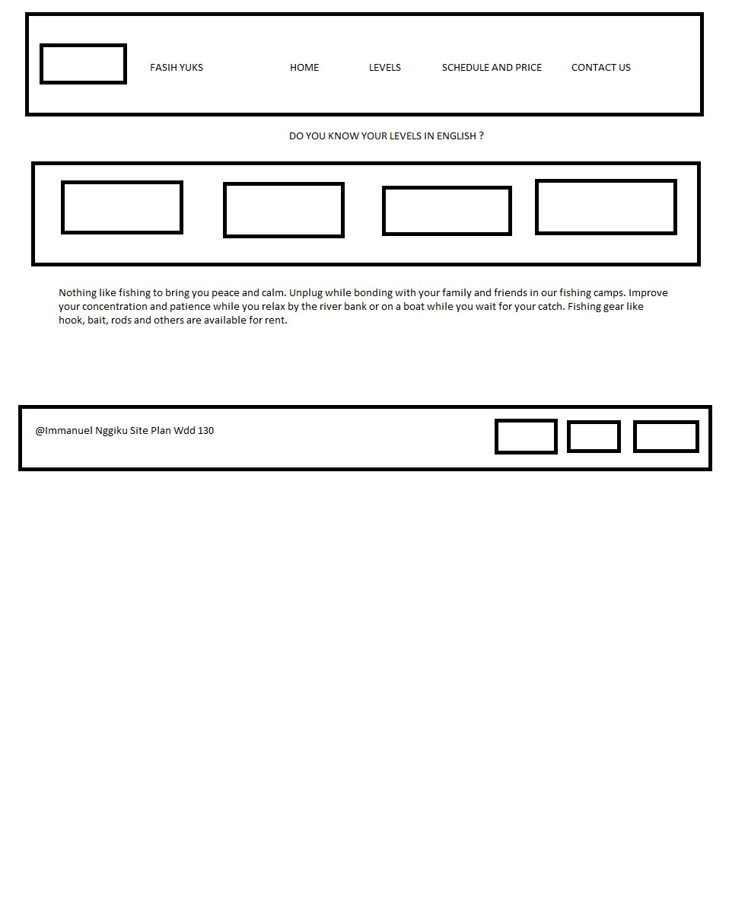
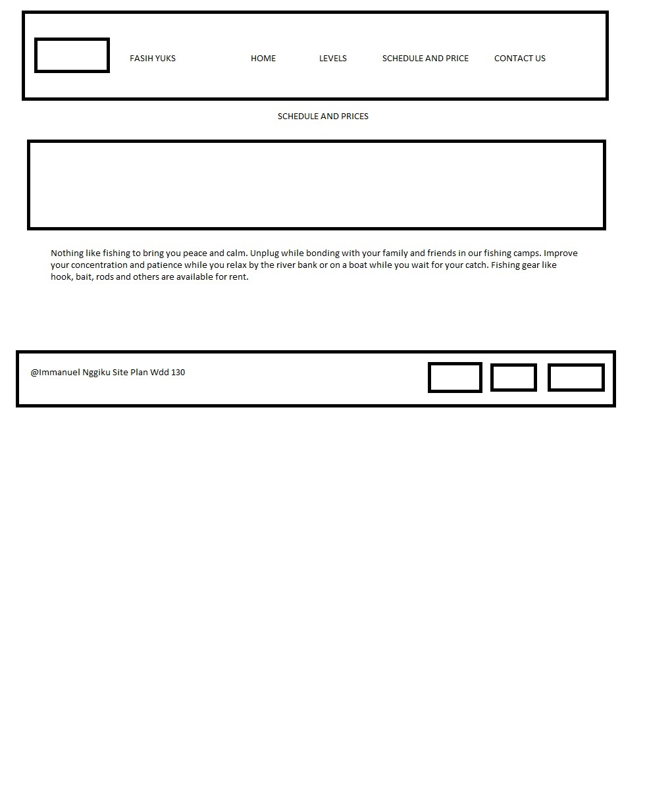

Site Name
Learning English Online Everywhere
Targe Audience
The people whose age are around 7 years old until 30 years old
Site Purpose And Goals
We are the best online English tutoring service. We are here to help Indonesians to learn English.
English is a language that must and must be mastered because in the future everyone will
communicate in English. In addition, Indonesian people will get a better future and jobs.
You don't have to worry about the future because we will help you with your English. We provide the skills
that
are
needed for your education in schools and your workplace.
Furthermore, many people do not have time to learn English.
There are many reasons, such as busy at work, not having the right time,
lack of motivation to study, no one to talk to and also not knowing where to study.
Don't worry, you have found the best and flexible online English learning platform with
a schedule that you can choose. We have morning, afternoon and evening classes.
And we also provide Native Speakers from America.

Do you Know Your English Levels ??
We are the best online English tutoring service. We are here to help Indonesians to learn English.
English is a language that must and must be mastered because in the future everyone will
communicate in English. In addition, Indonesian people will get a better future and jobs.
You don't have to worry about the future because we will help you with your English. We provide the skills that
are
needed for your education in schools and your workplace.
Furthermore, many people do not have time to learn English.
There are many reasons, such as busy at work, not having the right time,
lack of motivation to study, no one to talk to and also not knowing where to study.
Don't worry, you have found the best and flexible online English learning platform with
a schedule that you can choose. We have morning, afternoon and evening classes.
And we also provide Native Speakers from America.

Schedule and Payment
We are the best online English tutoring service. We are here to help Indonesians to learn English.
English is a language that must and must be mastered because in the future everyone will
communicate in English. In addition, Indonesian people will get a better future and jobs.
You don't have to worry about the future because we will help you with your English. We provide the skills that
are
needed for your education in schools and your workplace.
Furthermore, many people do not have time to learn English.
There are many reasons, such as busy at work, not having the right time,
lack of motivation to study, no one to talk to and also not knowing where to study.
Don't worry, you have found the best and flexible online English learning platform with
a schedule that you can choose. We have morning, afternoon and evening classes.
And we also provide Native Speakers from America.

This is my Wireframe
Homepage
Telling the readers the benefits of taking the course in this company

My Subpage Levels
This page is going to tell the readers about different kinds of levels that they can take

My Subpage Schedule
This page is going to tell the readers baout the schedulea and prices

My LOGO
I am going to use this logo to describe my company's identity that we are using cambridge curriculum to teach
the
students
COLOR SCHEME
| Primary |
Secondary |
Accent 1 |
Accent 2 |
{#3B8381} |
{#E58085} |
[#9E2021] |
{#AAA1A3} |
Typography
Heading Font : Times New Roman
Paragrph Font : Verdana